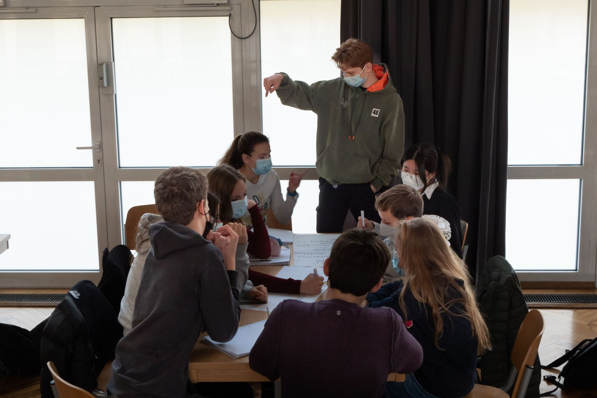

Engagement für Schule...

...und Schüler*innen
Wir sind die SV vom Annette-Gymnasium
Wir sind eine Versammlung von gewählten Schüler*innen die sich für die Ideen und sonstige Anliegen der Schüler*innen einsetzen. An erster Stelle setzen wir uns für die Ideen und sonstige Anliegen der Schüler*innen ein.
Die SV spielt eine große Rolle bei der Gestaltung verschiedenster Veranstaltungen und Events und des Schullebens.
Engagement in der SV
In SV-Sitzungen, SV-Tagen, vertreten wir über 1000 Schülerinnen und Schüler. Zusammen in Arbeitskreise arbeiten wir an diverse Anliegen.
Wie genau machen wir das? Das siehst du in unseren Blog Posts.